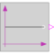

BooleanConstantLegacy name for a source with parameter variability Boolean output. |

|
Parameters (1)
| k |
Value: true Type: Boolean Description: Parameter output value |
|---|
Connectors (1)
| y |
Type: BooleanOutput Description: Connector of Boolean output signal |
|---|
Used in Examples (3)
|
Modelica.Blocks.Examples Demonstrates the usage of logical sources together with their diagram animation |
|
|
Modelica.Fluid.Examples.AST_BatchPlant.Test Demonstrates a tank with one constant top inlet mass flow rate and a bottom outlet into the ambient |
|
|
Modelica.Fluid.Examples.AST_BatchPlant.Test Demonstrates a tank with one constant top inlet mass flow rate and a bottom outlet into the ambient |
Used in Components (1)
|
Modelica.Electrical.PowerConverters.Enable Partial model providing enable parameter and optional enable input |